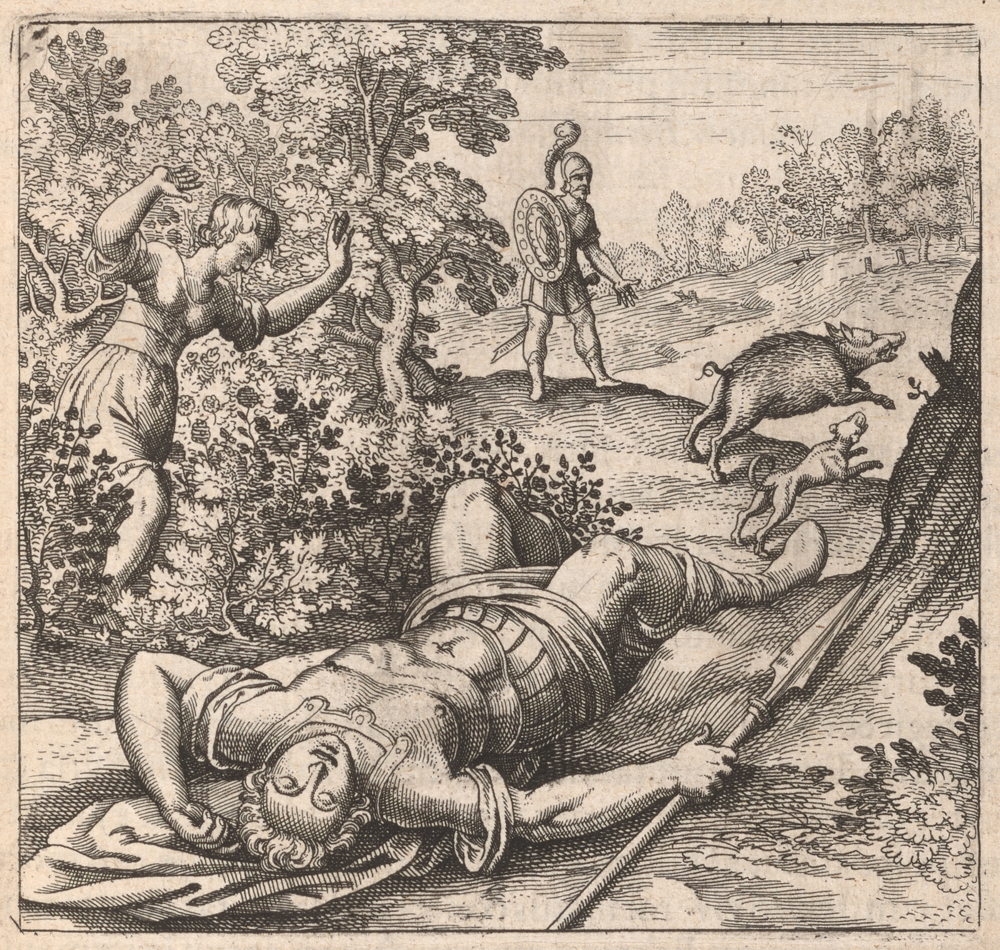

128173
EmblemeEmblem 41. Of the Secrets of Nature.
Adonis is killdkilled by a Boar, to whomewhom Venus hasting tinged the
Roses with her blood.
173
Emblema XLI. De Secretis Naturæae.
Adonis ab apro occiditur, cui Venus accurrens tinxit
Rosas sanguine.
172
FUGA XLI. in 3. infrà. retrograda existente simplici seu Basi.
Adonis wirt von einer wilden Saw erlegt / welchem wie die
Venus wolt Hülffe thun / hat sie mit Blut die Rosen
roht gefärbet.

EpigrammeEpigram 4i41.
Myrrha, conspiring with her Sire, gave breath
To th'the fair Adonis, tushdtushed by a Boar to death:
Fond Venus runnsruns, with thornethorn in foot, which bled,
And therewith tingdtinged the lilly Roses red;
The GoddesseGoddess weeps, the Syrians can't refrainerefrain,
Hee'sHe's laydlaid amongst the letticelettuce being SlayneSlain
Epigramma XLI.
Ex patre, Myrrha suo pulchrum suscepit Adonim,
Delitias Cypriæae, quem nece stravit aper.
Accurrit Venus &et pede læaesa cruore ruborem
Contulit ipsa rosæae, quæae prius alba fuit.
Flet Dea (flent Syri, luctus communis in orbe est)
Illum lactucis mollibus &et posuit.
XLI. Epigrammatis Latini versio Germanica.
Von ihrem eygnen Vatter hat die Myrrha Adonim gebohren /
Welchen die Venus sehr liebt / ein wild Saw tödt im Zoren /
Venus laufft zu / und in dem Verletzt am Rosenstrauch ihr Bein /
Daher von ihrem Blut die weissen Rosen roht seyn.
Die Göttin weynt (die Syrer weynt jederman darumb leydt trägt /)
Und hat ihn bald unter die weiche Lattich gelegt.
129174
How improperly some of the Mythologists resolve the Allegory of -
Adonis, and ascribe him sometimes to the SunneSun, the BoareBoar, by which
heehe was slayneslain, to a hard winter, sometimes to the seed of wheat, -
which is six monethsmonths with Proserpina under the earth, and as many
above the earth with Venus, is elswhereelsewhere sufficiently explained and
refuted by us. Here weewe doedo with the consent of all men declare the
PhilosophicallPhilosophical SunneSun to be meant by Adonis: From whence the Versicle:
Omnia sunt idem, Dionysus, Sol, et Adonis:
And Orpheus:------
Qui vario lætaris nomine Adoni,
Germinum et idem author, pariter puer atꝗ puella.
All which are by noeno means to be understood of the cælestiallcelestial, but -
PhilosophicallPhilosophical SunneSun; for this expressethexpresses both sexes, that not: SoeSo all=
soalso they attribute the very same thing to Dionysus, and the SunneSun, -
as to Adonis, and on the contrary, as allsoalso to Osiris. Adonis is killdkilled by a
BoareBoar, that is, by Acetum acerrimum, or the solutive water, which hathhas
terrible teeth like a boar, with which heehe tushethtushes Adonis; because the -
PhilosophicallPhilosophical Sol is mortally wounded by that boar, loosened in the
members and cuttcut ofoff; But Venus endeavoursendeavors to helpehelp her Paramour, -
who being dead, sheeshe laydlaid him amongst LetticesLettuces, and watchdwatched him. After
the same manner is Osiris killdkilled by Typhon, and cut into severallseveral peicespieces,
which Isis, the wife of Osiris, gathered up, and being joyndjoined together bu=
ryedburied. The same mourning, which followed the death of Osiris every -
year in ÆgyptEgypt, was allsoalso celebrated after the death of Adonis in Syria
and the bordering kingdoms; where for some dayesdays weeping and wailing
being heard, afterwards were signs of joy given, and dancing, as if heehe,
that was dead, now lived anew being conveyed to heaven: From whence
arose the vanity of their religion or heathenish superstition, which -
grew to an excessive height, the DevillDevil giving occasion, and procuring
false miracles. Adonis was (as they feignefeign) borneborn of Cinyre King of
Cyprus, and Myrrha his daughter, heehe is saydsaid to be borneborn in incæstincest (if
history be considered) wicked, if an allegory, not unlawfullunlawful, but prin=
cipally necessary: For if the mother and SonneSon, or the father and -
daughter be not joyndjoined together, and an offspring produced from thence,
nothing is perfected in this art. For here, the nearer the man and
wife are one to the other in blood, in the first degree of consan=
guinity, or second, the more fruitfullfruitful they are,
Discourse 4i41.
How improperly some of the Mythologists resolve the Allegory of -
Adonis, and ascribe him sometimes to the SunneSun, the BoareBoar, by which
heehe was slayneslain, to a hard winter, sometimes to the seed of wheat, -
which is six monethsmonths with Proserpina under the earth, and as many
above the earth with Venus, is elswhereelsewhere sufficiently explained and
refuted by us. Here weewe doedo with the consent of all men declare the
PhilosophicallPhilosophical SunneSun to be meant by Adonis: From whence the Versicle:
Omnia sunt idem, Dionysus, Sol, et Adonis:
And Orpheus:------
Qui vario lætaris nomine Adoni,
Germinum et idem author, pariter puer atꝗ puella.
All which are by noeno means to be understood of the cælestiallcelestial, but -
PhilosophicallPhilosophical SunneSun; for this expressethexpresses both sexes, that not: SoeSo all=
soalso they attribute the very same thing to Dionysus, and the SunneSun, -
as to Adonis, and on the contrary, as allsoalso to Osiris. Adonis is killdkilled by a
BoareBoar, that is, by Acetum acerrimum, or the solutive water, which hathhas
terrible teeth like a boar, with which heehe tushethtushes Adonis; because the -
PhilosophicallPhilosophical Sol is mortally wounded by that boar, loosened in the
members and cuttcut ofoff; But Venus endeavoursendeavors to helpehelp her Paramour, -
who being dead, sheeshe laydlaid him amongst LetticesLettuces, and watchdwatched him. After
the same manner is Osiris killdkilled by Typhon, and cut into severallseveral peicespieces,
which Isis, the wife of Osiris, gathered up, and being joyndjoined together bu=
ryedburied. The same mourning, which followed the death of Osiris every -
year in ÆgyptEgypt, was allsoalso celebrated after the death of Adonis in Syria
and the bordering kingdoms; where for some dayesdays weeping and wailing
being heard, afterwards were signs of joy given, and dancing, as if heehe,
that was dead, now lived anew being conveyed to heaven: From whence
arose the vanity of their religion or heathenish superstition, which -
grew to an excessive height, the DevillDevil giving occasion, and procuring
false miracles. Adonis was (as they feignefeign) borneborn of Cinyre King of
Cyprus, and Myrrha his daughter, heehe is saydsaid to be borneborn in incæstincest (if
history be considered) wicked, if an allegory, not unlawfullunlawful, but prin=
cipally necessary: For if the mother and SonneSon, or the father and -
daughter be not joyndjoined together, and an offspring produced from thence,
nothing is perfected in this art. For here, the nearer the man and
wife are one to the other in blood, in the first degree of consan=
guinity, or second, the more fruitfullfruitful they are,
129174
Discourse 4i41.
and on the con=
trary, the more remote, the more unfruitfullunfruitful, which is not tolerable
in the matrimony of men. For this cause ŒdypusOedipus marrydmarried his owneown
mother, Jupiter his Sister, soeso allsoalso Osiris, SaturneSaturn, Sol, the red
servant, Gabritius; Sol (in a Metaphor of Belinus in the Rosary) -
speaks thus of Adonis, that is, of himselfehimself: Know yee, that my father Sol
hathhas given meeme power above all power, and cloathedclothed meeme with the gar=
ment of glory: And a little after: For I am his onelyonly SonneSon and more
like my father, etc. I divest my servants of their power and nature, -
and cloathcloth them with my beautifullbeautiful splendoursplendor and light (which my
father gave meeme) in all their works: For I am excellent, who doedo exalt
and depressedepress all things, and none of my servants is above meeme, but one, -
who is permitted to be repugnant and contrary to meeme: And heehe destroyesdestroys
meeme, yet destroyesdestroys not my nature: And heehe is SaturneSaturn, who separates all
my parts: Afterwards I goego to my mother, who gathers together all my -
divided and separated members: I illuminate all those things that -
appertaineappertain to meeme, and cause light to appear openly in the way from
my father SaturneSaturn, as allsoalso from my mother, who is an enemy to meeme.
The words hitherto spoken are soeso clear, as to discussediscuss darkenessedarkness from
the eyes of the mind even to him that is but meanly conversant in -
the reading of authors, and discover the light of the SunneSun, which is
abundantly perspicuous in the cohærencyescoherencies insinuated of things and per=
sons: For those things which are true, though shaded under the veyleveil
of an allegory, doedo consent in wonderfullwonderful harmony one with another, -
but those things which are false are repugnant, and inconsistent with
themselves, and others . . . . . . . . .
trary, the more remote, the more unfruitfullunfruitful, which is not tolerable
in the matrimony of men. For this cause ŒdypusOedipus marrydmarried his owneown
mother, Jupiter his Sister, soeso allsoalso Osiris, SaturneSaturn, Sol, the red
servant, Gabritius; Sol (in a Metaphor of Belinus in the Rosary) -
speaks thus of Adonis, that is, of himselfehimself: Know yee, that my father Sol
hathhas given meeme power above all power, and cloathedclothed meeme with the gar=
ment of glory: And a little after: For I am his onelyonly SonneSon and more
like my father, etc. I divest my servants of their power and nature, -
and cloathcloth them with my beautifullbeautiful splendoursplendor and light (which my
father gave meeme) in all their works: For I am excellent, who doedo exalt
and depressedepress all things, and none of my servants is above meeme, but one, -
who is permitted to be repugnant and contrary to meeme: And heehe destroyesdestroys
meeme, yet destroyesdestroys not my nature: And heehe is SaturneSaturn, who separates all
my parts: Afterwards I goego to my mother, who gathers together all my -
divided and separated members: I illuminate all those things that -
appertaineappertain to meeme, and cause light to appear openly in the way from
my father SaturneSaturn, as allsoalso from my mother, who is an enemy to meeme.
The words hitherto spoken are soeso clear, as to discussediscuss darkenessedarkness from
the eyes of the mind even to him that is but meanly conversant in -
the reading of authors, and discover the light of the SunneSun, which is
abundantly perspicuous in the cohærencyescoherencies insinuated of things and per=
sons: For those things which are true, though shaded under the veyleveil
of an allegory, doedo consent in wonderfullwonderful harmony one with another, -
but those things which are false are repugnant, and inconsistent with
themselves, and others . . . . . . . . .
174
Adonidis allegoriam quàm impropriè quidam ex mythologis
explicent, &et eum nunc ad Solem, aprum, à quo occisus est, ad
Brumam hirsutam, nunc ad semina frumentorum, quæae 6. mensibus
apud Proserpinam subtus terram, &et totidem supra terram apud
Venerem sunt, referant, alibi satis expositum &et refutatum est à no-
bis. Hic Solem esse Philosophicum sub Adonide intellectum cum
concordantia omnium pronunciamus: Unde Versiculus:
Et Orpheus: qui vario læaetaris nomine Adoni,
Quæae omnia de Sole cœoeli nullo modo intelligenda sunt, sed de Phi-
losophico; Hic enim utrumque sexum exprimit, ille non item: Sic &et
Dionyso &et Soli idslut- ipsum tribuunt, quod Adonidi, &et ècontra, quem-
admodum &et Osiridi. Adonis verò ab Apro interimitur, hoc est, ab
aceto acerrimo seu aqua solutiva, cui aprungi &et fulminei sunt den-
tes, quibus Adonidem stringit; quia Sol Philosophicus ab eo apro le-
thaliter vulneratur, in membris solvitur &et discinditur; At Venus a-
masio suo opem ferre conatur, qui cùm esset mortuus, inter lactu-
cas eum posuit &et custodivit. Eundem ad modum Osiris à Typhone
occiditur, &et in varias partes dissecatur, quas Isis, Osiridis conjunx,
recollegit &et conjunctas sepulturæae tradidit. Idem luctus, qui mortẽmortem
Osiridis in ÆAegypto quotannnis secutus, &et Adonidis in Syria &et vi-
cinis regnis sequebatur; ubi per aliquot dies planctus &et ejulatus au-
ditus, post data sunt læaetitiæae signa &et tripudia, quasi ille, qui mortuus
fuisset, jam denuò viveret illatus cœoelo: Unde vanitas eorum religio-
nis seu superstitionis Ethnicæae oborta est, quæae crevit in immensum,
Diabolo præaebente occasionem, falsáque miracula procurante. Na-
tus fuit Adonis ex Cinyra (ut fingunt) Cypri rege, ejusq́ue filia Myr-
rha, natus dicitur incœoestu, si historia spectetur, nefario, si allegoria,
non illicito, sed inprimis necessario. Nisi enim ex matre &et filio, vel
ex patre &et filia, fiat conjunctio, indeq́ue nascatur, nihil in hac arte
perficitur. Hic enim, quo conjuges sint sibi invicem sanguine pro-
pinquiores, in primo gradu consanguinitatis, vel secundo, eò sunt
DISCURSUS XLI.
Adonidis allegoriam quàm impropriè quidam ex mythologis
explicent, &et eum nunc ad Solem, aprum, à quo occisus est, ad
Brumam hirsutam, nunc ad semina frumentorum, quæae 6. mensibus
apud Proserpinam subtus terram, &et totidem supra terram apud
Venerem sunt, referant, alibi satis expositum &et refutatum est à no-
bis. Hic Solem esse Philosophicum sub Adonide intellectum cum
concordantia omnium pronunciamus: Unde Versiculus:
Omnia sunt idem, Dionysus, Sol &et Adonis:
Et Orpheus: qui vario læaetaris nomine Adoni,
Germinum &et idem author, pariter puer atque puella.
Quæae omnia de Sole cœoeli nullo modo intelligenda sunt, sed de Phi-
losophico; Hic enim utrumque sexum exprimit, ille non item: Sic &et
Dionyso &et Soli idslut- ipsum tribuunt, quod Adonidi, &et ècontra, quem-
admodum &et Osiridi. Adonis verò ab Apro interimitur, hoc est, ab
aceto acerrimo seu aqua solutiva, cui aprungi &et fulminei sunt den-
tes, quibus Adonidem stringit; quia Sol Philosophicus ab eo apro le-
thaliter vulneratur, in membris solvitur &et discinditur; At Venus a-
masio suo opem ferre conatur, qui cùm esset mortuus, inter lactu-
cas eum posuit &et custodivit. Eundem ad modum Osiris à Typhone
occiditur, &et in varias partes dissecatur, quas Isis, Osiridis conjunx,
recollegit &et conjunctas sepulturæae tradidit. Idem luctus, qui mortẽmortem
Osiridis in ÆAegypto quotannnis secutus, &et Adonidis in Syria &et vi-
cinis regnis sequebatur; ubi per aliquot dies planctus &et ejulatus au-
ditus, post data sunt læaetitiæae signa &et tripudia, quasi ille, qui mortuus
fuisset, jam denuò viveret illatus cœoelo: Unde vanitas eorum religio-
nis seu superstitionis Ethnicæae oborta est, quæae crevit in immensum,
Diabolo præaebente occasionem, falsáque miracula procurante. Na-
tus fuit Adonis ex Cinyra (ut fingunt) Cypri rege, ejusq́ue filia Myr-
rha, natus dicitur incœoestu, si historia spectetur, nefario, si allegoria,
non illicito, sed inprimis necessario. Nisi enim ex matre &et filio, vel
ex patre &et filia, fiat conjunctio, indeq́ue nascatur, nihil in hac arte
perficitur. Hic enim, quo conjuges sint sibi invicem sanguine pro-
pinquiores, in primo gradu consanguinitatis, vel secundo, eò sunt
175
fœoecundiores &et èconverso, quo remotiores, eò in fœoecundiores, quod
in hominum matrimonio tolerabile non est. Hinc Oedypus pro-
priam matrem ducit, Jupiter sororem, sic &et Osyris, Saturnus, Sol,
servus rubeus, Gabritius; De Adonide Sol (in metaphora Belini a-
pud Rosarium) hoc est, de seipso ita loquitur: Scitote, quod pater
meus Sol dedit mihi potestatem super omnem potentiam, &et induit me vesti-
mento gloriæae: Et mox: Ego enim unicus sum &et assimilior patri meo, &c.etcaetera ser-
servos meos extraho de potentia &et natura eorum, &et induo eos de splendore &et
lumine meo pulchro quem dedit mihi pater meus, in omnibus operibus eo-
rum: Ego enim sum excellens, qui exalto &et deprimo cuncta, &et nullus servo-
rum meorum potest super me, nisi unus, cui datum est quod contrarius est mi-
hi. Et ipse destruit me, non tamen destruit naturam meam. Et ipse est Satur-
nus, qui separat omnia mea membra: Postea vado ad matrem meam, quæae con-
gregat omnia membra divisa &et separata: Ego sum illuminans omnia
mea, &et facio lumen apparere patenter in itinere de patre meo Saturno, &et et-
iam de matre mea quæae mihi inimicatur. Hactenus dicta adeò clara sunt,
ut vel mediocriter in lectione authorum versato tenebras à mentis
oculis discutiant, &et lucem solarem patefaciant, quæae in concordan-
tiis adductis rerum &et personarum abundè perspicitur. Nam
quæae vera sunt, etiamsi sub velo allegoriæae tecta, miro inter se suffra-
gio consentiunt, quæae falsa, secum cumq́ue aliis pugnant,&et in diver-
sa abeunt.
fœoecundiores &et èconverso, quo remotiores, eò in fœoecundiores, quod
in hominum matrimonio tolerabile non est. Hinc Oedypus pro-
priam matrem ducit, Jupiter sororem, sic &et Osyris, Saturnus, Sol,
servus rubeus, Gabritius; De Adonide Sol (in metaphora Belini a-
pud Rosarium) hoc est, de seipso ita loquitur: Scitote, quod pater
meus Sol dedit mihi potestatem super omnem potentiam, &et induit me vesti-
mento gloriæae: Et mox: Ego enim unicus sum &et assimilior patri meo, &c.etcaetera ser-
servos meos extraho de potentia &et natura eorum, &et induo eos de splendore &et
lumine meo pulchro quem dedit mihi pater meus, in omnibus operibus eo-
rum: Ego enim sum excellens, qui exalto &et deprimo cuncta, &et nullus servo-
rum meorum potest super me, nisi unus, cui datum est quod contrarius est mi-
hi. Et ipse destruit me, non tamen destruit naturam meam. Et ipse est Satur-
nus, qui separat omnia mea membra: Postea vado ad matrem meam, quæae con-
gregat omnia membra divisa &et separata: Ego sum illuminans omnia
mea, &et facio lumen apparere patenter in itinere de patre meo Saturno, &et et-
iam de matre mea quæae mihi inimicatur. Hactenus dicta adeò clara sunt,
ut vel mediocriter in lectione authorum versato tenebras à mentis
oculis discutiant, &et lucem solarem patefaciant, quæae in concordan-
tiis adductis rerum &et personarum abundè perspicitur. Nam
quæae vera sunt, etiamsi sub velo allegoriæae tecta, miro inter se suffra-
gio consentiunt, quæae falsa, secum cumq́ue aliis pugnant,&et in diver-
sa abeunt.